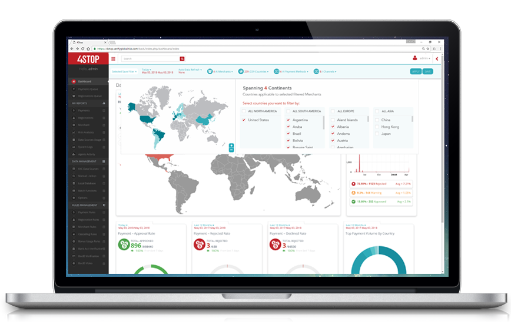
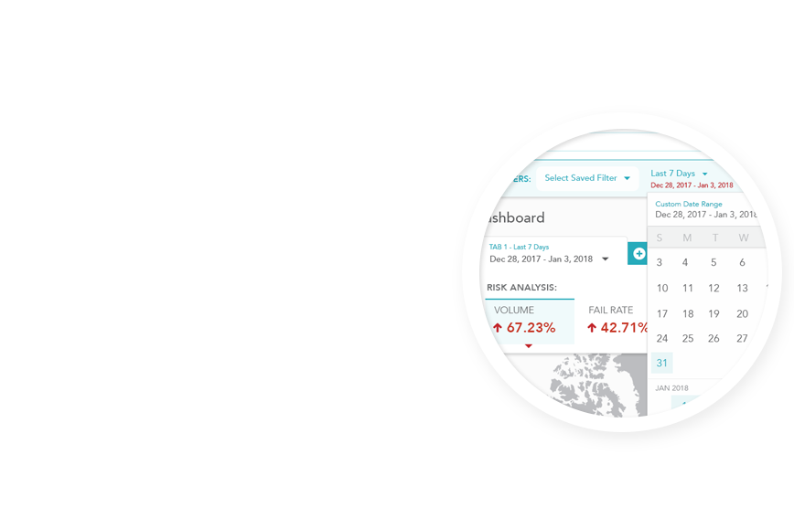
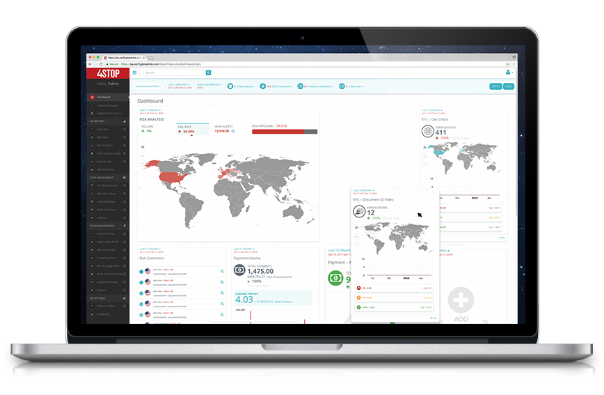
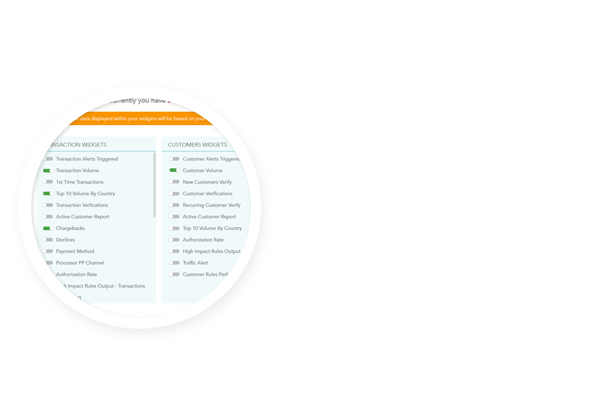

Global KYC, Compliance and Anti-fraud Technology Provider 4Stop Launches Phase One of Their Product Enhancement.
Press Release Published on June 14th, 2018. View Press Release on Newswire.
Cologne, Germany - 4Stop (“FourStop GmbH”) announces that it has completed the first phase of their product enhancement which encompasses a redesign of their platform’s dashboard to provide enriched monitoring, reporting and analytic features with optimal user experience engagement design.
As 4Stop is founded by individuals with collectively over 60 years’ experience in the risk management industry, they understand the pain point of truly managing risk with multiple touchpoints, moving parts, volume, etc. It is through this that they established the all-in-one 4Stop solution to provide a single integration that supports KYC, compliance and anti-fraud with a centralized view of risk. Now that their technology has met their foundational benchmark to solve the risk market pain points they are focused on enhancing their proprietary technology further with more leading-edge features and a user experience that will revolutionise the methods in which risk managers and operations teams implement their anti-fraud and compliance processes.
The first release of their product enhancement focused on excelling their dashboard and overall filtering capabilities with a wide spread of new functionality and user experience. Optimising and improving efficiencies at detecting risk and reviewing, digesting and monitoring indepth data output for faster reaction times and understanding of overall performance output.
The newly designed dashboard provides 4Stop clients with a detailed overall data risk analysis reporting widget to quickly and easily understand volumes in conjunction with risk indications at all touchpoints in their customer journey including; sign-ups, logins, account updates, and transactions. Coupled with the ability to view their risk analysis filtered by merchant, sub-merchant, processing channel, global scale or drilled down to a particular country. Within seconds they are able to view the who, what and where on their risk exposure and rectify it in minutes.




 Follow us
Follow us